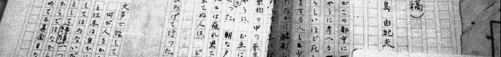
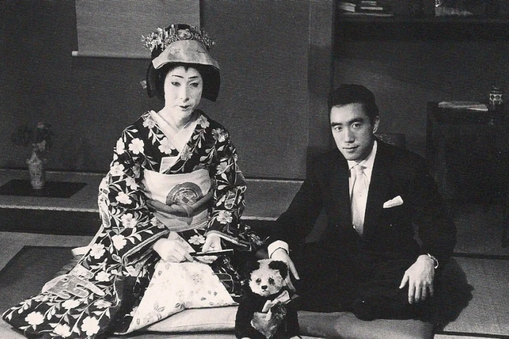
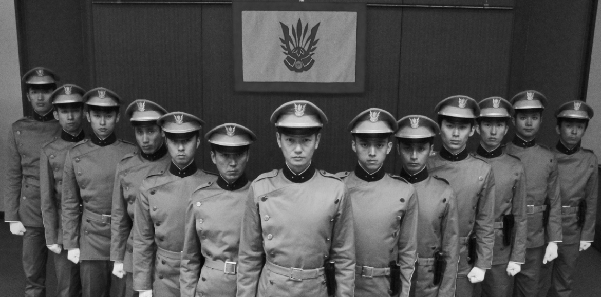
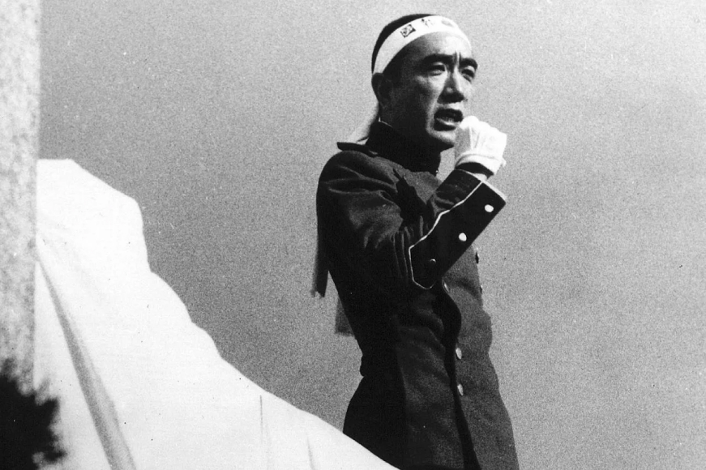

Юкио Мисима — японский писатель и драматург. Яркий представитель второй волны послевоенной японской
литературы, продолжатель традиций японского эстетизма
Юкио Мисима, которого по-настоящему звали Кимитакэ Хираока, родился 14 января 1925 года в токийском районе
Йоцуя, находившемся на месте современного японского города Сидзюку.
Его отец Адзуса Хираоки был крупным правительственным чиновником и высокообразованным интеллигентным человеком,
а мать Сидзуэ Хаши происходила из рода любителей литературы, издревле служивших клану Маэда
из княжества Кага. У мальчика были бабушки, дедушки, а также младшая сестра Мицуко, которая
в 17-летнем возрасте умерла от тифа, и брат Тиюки, появившийся на свет в 1930 году.
Содержание
За псевдонимом Юкио Мисима скрывался 24-летний Кимитакэ Хираока. Псевдоним он придумал еще
в 16 лет, чтобы скрыть от отца свои писательские амбиции.
В 1945 году, после капитуляции Японии и окончания Второй мировой войны, Мисима полностью посвятил
себя творческой деятельности и начал сочинять короткие пьесы, стихи и эссе. В 1946 году Юкио
завершил работу над дебютным романом «Воры» и попал в ряды знаменитых писателей, живших
на Востоке в сложный послевоенный период.
Полученный статус закрепился после выхода полуавтобиографической книги «Исповедь маски».
В итоге, став ведущим представителем японской литературы, Мисима решил познакомиться с другими странами
и в качестве сотрудника токийской газеты отправился в путешествие, которое частично отразилось
в романе «Шум прибоя», основанном на древнегреческой легенде о Дафнисе и Хлое. Под
влиянием немецкого интеллектуала Томаса Манна и азиатского эстета Мори Огая автор начал наблюдать
за окружающими событиями и сочинил роман «Золотой храм».
Photo 1. Жить как художник, умереть как самурай
Писателю было трудно принять противоречивые отзывы критиков и публики, усилившиеся после отказа
от постановки недавно законченной пьесы «Кото радости». Это случилось из-за того, что
в конце
1950-х — начале 1960-х годов Мисима увлёкся политикой и в сдержанной форме протестовал против
радикалов.
Однако благодаря разгромным статьям, опубликованным в Японии, имя Юкио стало знакомо европейской
и американской публике, что гарантировало успех задуманной тетралогии «Море изобилия», состоявшей
из романов «Весенний снег», «Несущие кони», «Храм на рассвете»
и «Падение ангела». Это привело и к нескольким номинациям на Нобелевскую премию
по литературе, проигранным гватемальскому коллеге Мигелю Астуриасу и собственному учителю Ясунари
Кавабате.

Личная жизнь
Творческая и неутомимая натура писателя требовала того, чтобы рядом с ним находилась женщина, понимающая
и близкая по характеру и духу, поэтому Мисима сочетался браком только в 1958 году. Ёко
Сугияма идеально подходила мужчине по всем параметрам, поскольку была не далека от искусства
и являлась дочерью популярного японского художника.

Photo 2. Мисима в театре
Семья оказалась прочной, и благодаря стабильному доходу Юкио с женой и двумя детьми построил имение
в викторианском стиле и обосновался под его крышей на долгие 12 лет
Смерть
К концу жизни Мисима с головой окунулся в политику и стал заклятым врагом ультралевых
и националистов за приверженность самурайскому кодексу Бусидо и основание военной организации
«Татэ-но кай» («Общество щита»)

Photo 3. Общество щита
25 ноября 1970-го самые фанатичные члены предприняли попытку государственного переворота, провал которой
заставил писателя исполнить древний ритуал харакири, завершившийся смертью по причине колотой раны
в животе.
Таким образом, писателю не удалось показать миру красоту самурайской смерти, а остаться человеком, который,
согласно цитате, угодил в ловушку противопоставления и навсегда остался неизлечимым.

Photo 4. Последний из самураев
Цитаты
«Ошибаются те, кто считает мечты игрой интеллекта. Нет, мечты — нечто противоположное, это
бегство от разума».
«Прошлое не всегда тянет назад. В нем рассыпаны немногочисленные, но мощные пружины,
которые, распрямляясь, толкают нас в будущее».
«Простота — наивысшая точка соприкосновения жизни и искусства. Тот, кто презрительно
относится к простоте, вызывает только жалость, ибо тем самым он признает своё поражение. Если человек
боится простоты, значит, он далёк от зрелости».